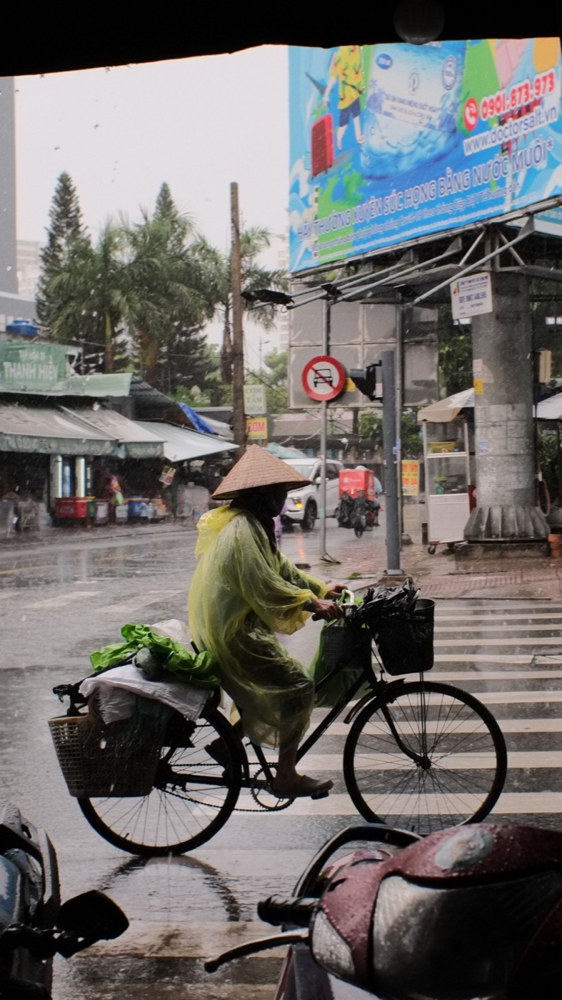
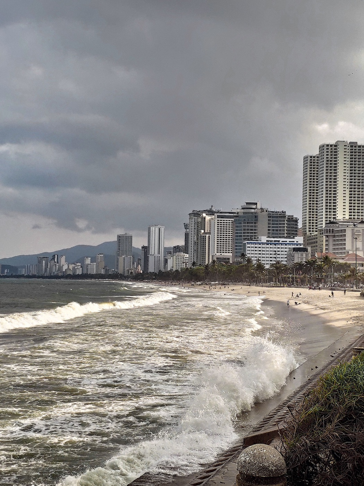

Как выбрать дождевик для байка во Вьетнаме

Тропический дождь начинается быстро, поэтому дождевик лучше постоянно возить с собой. Для байка важна не только непромокаемость: свободная ткань не должна закрывать фару, цепляться за колёса или ограничивать движения.
Пончо или раздельный костюм
Пончо надевается быстрее и хорошо подходит для короткой городской поездки. Выбирай модель умеренной длины с фиксаторами по бокам и прозрачной вставкой для фары, если ткань закрывает переднюю часть скутера. Слишком широкое пончо раздувается ветром и может попасть к колесу.
Куртка и брюки дольше надеваются, зато лучше держатся на теле, удобнее на скорости и в долгой поездке. Для регулярных маршрутов за город это более предсказуемый вариант. Брючины должны закрывать обувь, но не волочиться по земле.
На что смотреть при покупке
- яркий цвет или светоотражающие элементы;
- проклеенные швы и плотные застёжки;
- капюшон, который не мешает шлему и обзору;
- вентиляция на спине или под руками;
- достаточный размер для свободного поворота руля;
- компактный чехол для хранения.

Как надевать безопасно
Не пытайся раскрыть пончо на ходу. Остановись под крышей или на площадке в стороне от потока, выключи двигатель и только потом доставай экипировку. После надевания проверь, что края не свисают рядом с колёсами и выхлопом, а фара и стоп-сигнал остаются видны.
Что делать с обувью и вещами
Бахилы или непромокаемая обувь полезны, но гладкая подошва может скользить на остановке. Телефон, документы и зарядку держи в отдельном герметичном пакете: багажник скутера не всегда полностью защищён от воды. Рюкзак лучше надевать под пончо или использовать собственный чехол.
После поездки
Не складывай мокрый дождевик надолго. Промой его от дорожной грязи, высуши в тени и проверь швы. Слипшийся или потрескавшийся материал может промокнуть именно тогда, когда он нужен больше всего.
Когда лучше не ехать
Дождевик не делает безопасными сильный ветер, почти нулевую видимость и глубокую воду на дороге. Если поток резко усилился, найди освещённое укрытие подальше от деревьев и проводов и пережди пик. После дождя избегай луж неизвестной глубины и увеличь дистанцию.
Короткий вывод
Для города удобно компактное пончо с фиксаторами, для дальних поездок — раздельный костюм. Главные критерии: видимость, правильный размер и отсутствие свободных краёв у колёс. Больше советов есть в статье про сезон дождей в Нячанге и руководстве по торможению на мокрой дороге.